Integral Image Filters
| Integral Image Filters (Fiji) | |
|---|---|
| Author | Stephan Saalfeld ([1]) |
| Maintainer | Stephan Saalfeld |
| Source | GitHub |
| Initial release | March 21st, 2011 |
| Latest version | February 22nd, 2012 |
| Development status | stable, active |
| Category | Plugins, Filtering |
Integral images have been introduced in by Crow (1984)[1] as a technique to improve texture rendering speed at multiple scales in perspective projections. The technique has since then been used for a number of applications. The most popular examples are fast normalized cross-correlation[2], the Viola-Jones object detection framework[3], and the Speeded Up Robust Feature (SURF) transform[4]. In Fiji, we currently use Integral Images for a number of basic statistic block filters.
Contents
Basic Block Statistics with Integral Images (Summed-Area Tables)
Mean
The mean  of a discrete set of random variables
of a discrete set of random variables  is defined as
is defined as
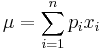
Let 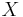 be the set of pixel values in a rectangular block with all pixel values having the same probability  , then
, then

The sums can be generated from an Integral Image over  . For a two-dimensional image, the table can be generated in a single loop with, on average, 3~sums for calculation and 5~sums for data access per pixel. Using that table, the mean of an arbitrary rectangular block of pixels can be generated in constant time with 1 product and 3 sums for calculation and 2 products and 6 sums for data access.
. For a two-dimensional image, the table can be generated in a single loop with, on average, 3~sums for calculation and 5~sums for data access per pixel. Using that table, the mean of an arbitrary rectangular block of pixels can be generated in constant time with 1 product and 3 sums for calculation and 2 products and 6 sums for data access.
Variance
The variance 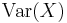 of a discrete set of random variables is defined as

Let be the set of pixel values in a rectangular block with all pixel values having the same probability , then

which expands to


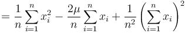
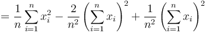
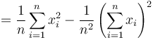


Both sums can be generated from two Integral Images over and  respectively. For a two-dimensional image, both tables can be generated in a single loop with, on average, 1 product and 6 sums for calculation and 5 sums for data access per pixel. Using those, the variance of an arbitrary rectangular block of pixels can be generated in constant time with 3 products and 9 sums for calculation and 2 products and 6 sums for data access.
respectively. For a two-dimensional image, both tables can be generated in a single loop with, on average, 1 product and 6 sums for calculation and 5 sums for data access per pixel. Using those, the variance of an arbitrary rectangular block of pixels can be generated in constant time with 3 products and 9 sums for calculation and 2 products and 6 sums for data access.
Block Matching with Integral Images
We may deal with a situation where the intensities in two overlapping image regions and 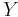 might vary in brightness and contrast. Then, a simple estimator like e.g. the Mean Square Error (MSE) cannot be used as a similarity measure because it is not invariant with respect to a linear transformation. Instead, an appropriate measure for linear dependency would serve the purpose. The Pearson Product-Moment Correlation Coefficient (PMCC) 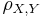 is an appropriate measure for linear dependency
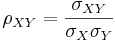
which, for and being a finite sample with  ~elements each gives the Correlation Coefficient
~elements each gives the Correlation Coefficient 
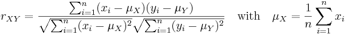
that can be transformed yielding a set of independent sums. For the numerator, that is
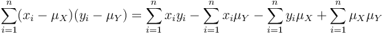


For the denominator, it is handy to multiply with  first
first

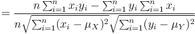

because
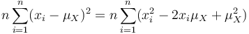


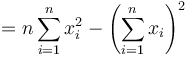
yielding
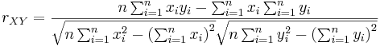
which means that we can calculate for each block at a fix offset of two images from five summed-area tables at constant time. In some situations (e.g. finding an extremum), it is sufficient to estimate  and the sign of . Then, the calculation of the two square roots can be avoided
and the sign of . Then, the calculation of the two square roots can be avoided

with

References
- ↑ Crow, Franklin C. (1984). "Summed-area tables for texture mapping". Proceedings of the 11th annual conference on Computer graphics and interactive techniques: 207–212, ACM. doi:10.1145/800031.808600.
- ↑ Lewis, J. P. (1995). "Fast template matching". Vision Interface 95: 120–123, Canadian Image Processing and Pattern Recognition Society.
- ↑ Viola, Paul & Jones, Michael J. (2004), "Robust Real-Time Face Detection", International Journal of Computer Vision 57 (2): 137–154
- ↑ Bay, Herbert; Ess, Andreas & Tuytelaars, Tinne et al. (2008), "SURF: Speeded Up Robust Features", Computer Vision and Image Understanding (CVIU) 110 (3): 346–359